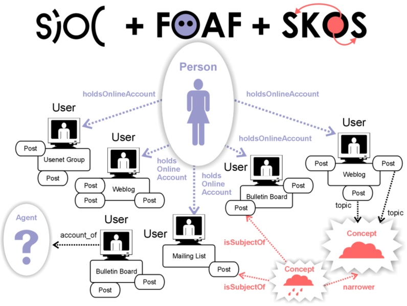
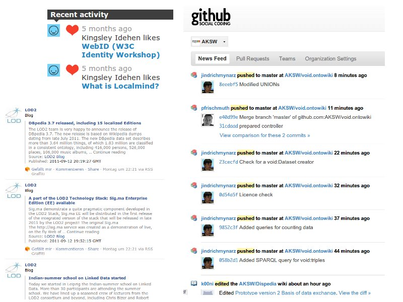
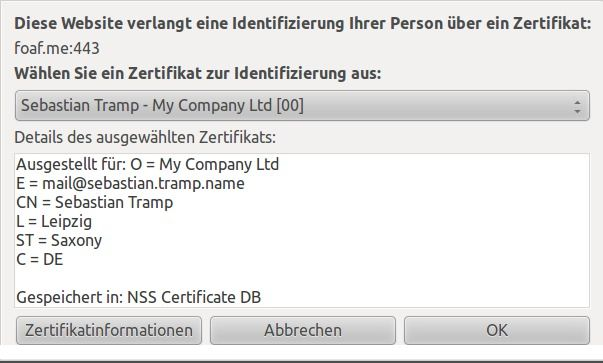
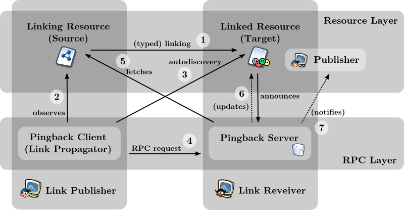
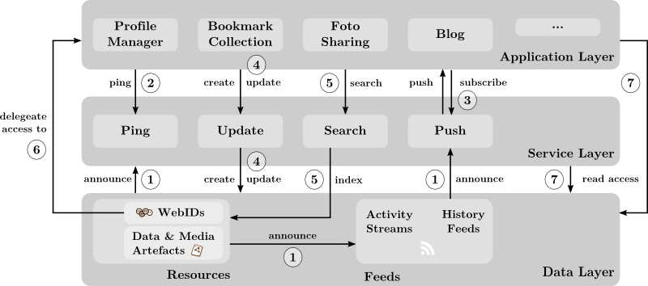

Outline
The Social Web as we know it Distributed Semantic Social Networks (DSSN)
Vision (Linked) Data and Vocabularies Protocols Architecture
The Social Web as we know it
Social Network Sites / Social Platforms
Identity of a user and their data can easily be entered
Accessed and Manipulation via proprietary interfaces only
Walled Gardens for the users profile
The Social Web World as we know it
Major Problems for end users
(lack of) Portability : no easy export of user profiles and exchange with other SNS
(lack of) Identity : no easy cross-SNS identification (e.g. to find friends on other SNS)
(lack of) Linkability : (as a consequence of 2.)
(lack of) Privacy : users do not have control over their data
Vision
Allow Users to
own their own data
link to data and friends across different sites
split their profile across multiple personal context
share their data with any application they want
Not for a few sites, or a few applications, or to a few friends … but web-scaled to any of these resources.
Assumption
With Semantic Web / Linked Data Technologies, we can achieve …
Portability through de-centrally shared open vocabularies.
Identity though Uniform Resource Identifier (URI/IRI) and the architecture of the WWW.
Linkability as a consequence of 2) as well as 1).
Privacy though transport layer security and de-centralization.
→ (somehow de-central) Semantic Social Networks
(Linked) Data and Vocabularies
A DSSN consists of the following data structures:
Resources describe static entities:
Agents include user, groups as well as applications
WebID (profile)
A WebID is a way to uniquely identify a person, company, organization, or other agent using a URI. The term "WebID" was coined by Dan Brickley and Tim Berners-Lee in 2000.
http://www.w3.org/wiki/WebID
WebID (profile)
GOAL: simplify the creation of a digital ID for end users
A de-reference-able RDF document, describing its owner
Use links to other resources to build a network
Currently a W3C Editor's Draft (February 2011)
… is widely accepted as a base for WebID descriptions.
<http://philipp.frischmuth24.de/id/me> a foaf:Person;
rdfs:comment "This is my public profile only, more information available with FOAF+SSL";
rel:worksWith <http://sebastian.tramp.name>;
foaf:depiction <http://…/me.jpg>;
foaf:firstName "Philipp"; foaf:surname "Frischmuth";
foaf:mbox <mailto:frischmuth@informatik.uni-leipzig.de>;
foaf:phone <tel:+49-341-97-32368>;
foaf:workInfoHomepage <http://bis.informatik.uni-leipzig.de/PhilippFrischmuth>.
… consists of currently 13 classes and 63 properties.
Agent: Person, Organization, Group
Document: Image, PersonalProfileDocument
datatype properties: name, nick, gender, title, …, myersBriggs
object properties: knows , homepage, currentProject, …
FOAF extension vocabularies
Can add sub properties or sub classes:
Or are generic enough to be used in combination:
(Linked) Data and Vocabularies
A DSSN consists of the following data structures:
Resources describe static entities:
Agents include user, groups as well as applications
Data artefacts include user-generated content as comments, notes, posts …
SIOC: Semantically-Interlinked Online Communities
Extensible vocabulary to describe (user-generated) content from online communities
Integrates well with FOAF and SKOS
SIOC: Example in Turtle
<http://blog.example.com/posts/1> a sioc:Post;
dc:title "Hello World";
dcterms:created "2006-09-07T09:33:30Z";
sioc:has_container <http://blog.example.com/#id>;
sioc:has_creator users/1;
sioc:content "… content without markup …";
sioc:topic dbpedia:SIOC.
<http://sebastian.tramp.name> a foaf:Person;
rdfs:label "Sebastian Tramp";
foaf:holdsOnlineAccount users:1.
Note: prefix declarations for sioc, dc(terms), foaf and dbpedia omitted.
SIOC: Integration

Illustration by John Breslin @ sioc-project.org (September 2006)
(Linked) Data and Vocabularies
A DSSN consists of the following data structures:
Resources describe static entities:
Agents include user, groups as well as applications
Data artefacts include user-generated content as comments, notes, posts …
Media artefacts include images, video and audio files
(Linked) Data and Vocabularies
A DSSN consists of the following data structures:
Resources describe static entities:
Agents include user, groups as well as applications
Data artefacts include user-generated content as comments, notes, posts …
Media artefacts include images, video and audio files
Feeds represent and publish events in the social network:
Activity streams
(History / Synchronization) feeds
Activity Feeds

Activities feeds are a major feature on any Social Networking site from Facebook to Github
Activity Feeds / Streams
Activity Streams is a specification to syndicate activities across applications Atom Activity Streams 1.0 are Activity Streams represented as Atom Feed entries
Activity Streams: Concepts
An activity is 4-tupel and consist of
Actor: user, group or application
Verb: post, share, tag, save, join, …
Object: article, media content, comment but also user and groups
Context: time, location, mood
Vimeo activity:
Kingsley Idehen
likes
"What is Localmind?"
5 months ago.
DSSN protocols
FOAF+SSL Semantic Pingback PubSubHubbub (SPARQL)
FOAF+SSL
… enables your WebID for login usage
Connect an SSL client certificate with a WebID profile
Allow the WebID owner to use her WebID / certificate instead of a username/password
[] a rsa:RSAPublicKey;
cert:identity <http://sebastian.tramp.name>;
rsa:modulus """C41199EE26C57F…27A8495F5A""";
rsa:public_exponent "65537"^^cert:int.
FOAF+SSL
Browser support nearly 100% but somehow basic ...

Semantic Pingback
Based on an extension of the well-known Pingback technology
Adds support for Linked Data resources including RDFa, and named links/relations.
Two-fold usage:
Facilitate the first contact between two
WebIDs and establish a new connection (Friending)
Ping the owner of different social network artefacts while doing an activity with that artefact (tagging an image, sharing a website from the owner).
Semantic Pingback

PubSubHubbub
Publish/Subscription protocol based on Atom Feeds
Near-instant notifications (via webhook callbacks) when a subscribed feed URL is updated
Avoids constant polling and saves bandwidth while enhancing delivery time.
PubSubHubbub
Protocol outline:
feeds are linked to a hub
clients subscribe for a feed on its hub
feed publisher informs the hub on updates
the hub pushes this information to its subscribed clients
Recapitulation
Distributed Semantic Social Networks (DSSN):
(Linked) Data and Vocabularies
WebID Profiles: FOAF, Relationship, geo, …
Data & Media Artefacts: SIOC, DC, SKOS, … and content negotiation
Protocols
FOAF+SSL
Semantic Pingback
PubSubHubbub
(SPARQL)
Thank you for your Attention!
My WebID:
This slide deck:
Overall Architecture

(1) Resources announce services and feeds, feeds announce services – in particular a push service.
(2) Applications initiate ping requests to spin the Linked Data Network.
Overall Architecture
(3) Applications subscribe to feeds on push services and receive instant notifications on updates.
(4) Update services are able to modify resources and feeds (e.g. on demand of an application).
Overall Architecture
(5) Personal and global search services can index resources and are used by applications.
(6) Access to resources and services can be delegated to applications by a WebIDs, i.e. the application can act in the name of the WebID owner.
(7) The majority of all access operations is executed through standard web requests.
←
→
#


 Friend of a Friend (FOAF)
Friend of a Friend (FOAF)